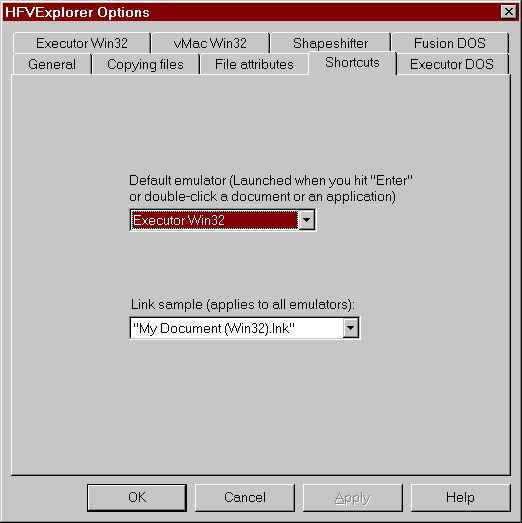

Default emulator selects the preferred emulator to launch when Enter key or double-click is hit on a file or document. Currently HFVExplorer supports five emulators. They all have separate setup pages (read down). The parameters (application path, possibly document path) are passed to the emulator using various techniques, usually by creating an alias into the "System Folder:Startup Items" folder. Executor requires a different method; parameters are passed either in the command line (Executor Win32 version) or in a parameter file (Executor DOS version).
Link sample selects how the shortcuts are displayed on the Windows desktop.